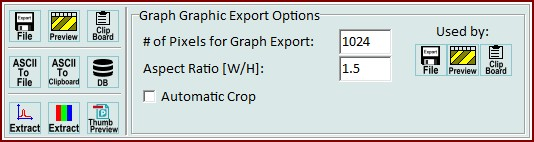

|
图谱查看器导出
|
您可以使用图谱查看器环形菜单打开这些功能。

图谱图形导出选项
在这里您可以更改导出位图的尺寸
参见图谱查看器选项
导出位图到文件：
将当前视图导出到文件。您可以选择多种图像格式。
导出位图到预览：
将当前视图导出到内置的图形编辑器。在这里您可以翻转或旋转位图，并将其保存到文件或剪贴板。
导出位图到剪贴板：
将当前视图作为位图导出到剪贴板。这使您可以将位图粘贴到其他图形软件中。
导出ASCII到文件：
将当前图谱以ASCII格式导出到文件。
对于所有ASCII导出，格式为：<解释的X轴值> <Tab> <Y轴值>
导出ASCII到剪贴板：
将当前图谱以ASCII格式导出到剪贴板。
导出到数据库应用程序
将所有光谱数据对象（使用选定区域，如果设置了的话）导出到可在数据库导出选项中定义的数据库应用程序。
另请参见WITec Project中的数据库搜索。
注意1：仅当图谱具有光谱X变换且X轴的解释单位为"rel. 1/cm"时，导出才有效
注意2：如果在图谱查看器中标记了区域，则仅导出标记的区域。切换到标记区域鼠标模式并在窗口中点击某处以清除标记区域。
提取图谱到项目：
将当前显示的单个图谱作为新的图谱对象提取到当前项目。
提取视图为位图到项目
将当前视图作为新的位图对象导出到当前项目。
设置为WIP文件在Windows资源管理器中的缩略图预览：
将当前视图设置为WIP文件的缩略图预览。您必须在此之后保存项目才能生效。Windows文件资源管理器可能会缓存缩略图，因此您可能不会立即看到新的缩略图。